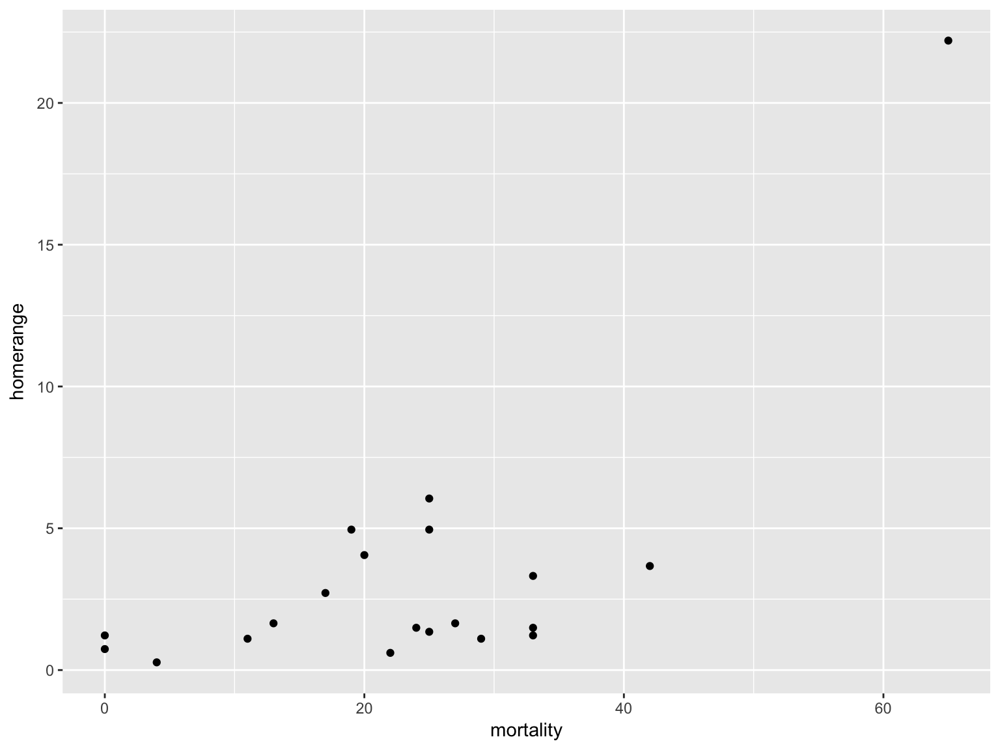
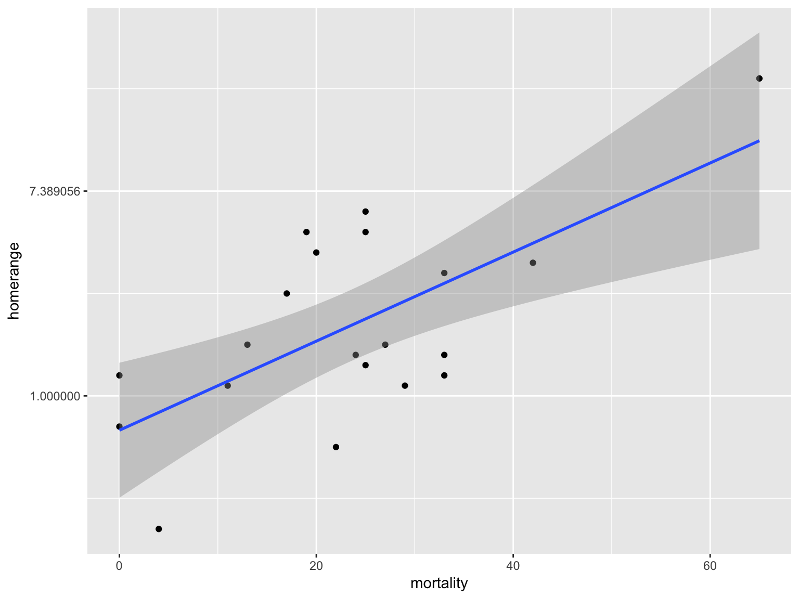
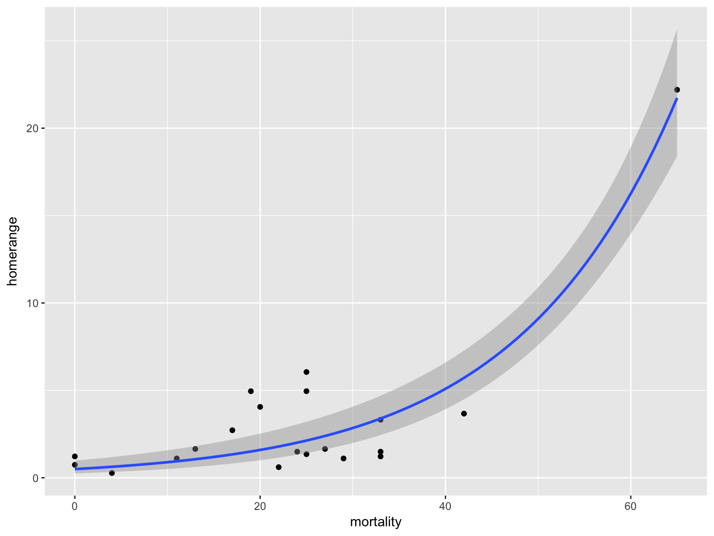

Generalized Linear Models
Intro to Data Science for Biology
Nonlinear Data is Everywhere

We can transform…

But often nonlinear data = non-gaussian error generating process

Generalized Linear Models Errors
| Error Generating Proces | Common Use | Typical DGP Shape |
|---|---|---|
| Log-Linear | Error accumulates additively, and then is exponentiated | Exponential |
| Poisson | Count data | Exponential |
| Binomial | Frequency, probability data | Logistic |
Log-Normal Distributions
\[ Y_i \sim LN(\mu, \sigma^2)\]
- Used for data whose error is additive, but from multiplicative process
- \(Y_i = e^X + e^{\epsilon_i}, \epsilon_i \sim N(0, \sigma^2)\)
- Error is additive
- E.g. variance is from external sources, happens to be LN
- This is very different form a log transform
- \(Y_i = e^{x}e^{\epsilon_i}\)
- Error is multiplicative
- E.g., variance is something that accumulates over time
The GLM
zoo_mod <- glm(homerange ~ mortality, data=zoo,
family=gaussian(link="log"))Our two big questions
- Does our model explain more variation in the data than a null model?
- Are the parameters different from 0?
Evaluating the DGP: \(\chi^2\) Likelihood Ratios
- We fit GLMs using different techniques
- A model has a Likelihood of the model given the data
- The ratio of the likelihood of the model versus the likelihood of a null model is \(\chi^2\) distributed
- It’s like an F test, but with Likelihoods instead of Mean Squares
\(\chi^2\) Likelihood Ratios
library(car)
Anova(zoo_mod)## Analysis of Deviance Table (Type II tests)
##
## Response: homerange
## LR Chisq Df Pr(>Chisq)
## mortality 105.68 1 < 2.2e-16 ***
## ---
## Signif. codes: 0 '***' 0.001 '**' 0.01 '*' 0.05 '.' 0.1 ' ' 1Plotting with stat_smooth and glms
home +
stat_smooth(method="glm",
method.args=list(family=gaussian(link="log")))Plotting with stat_smooth and glms

Generalized Linear Models Errors
| Error Generating Proces | Common Use | Typical DGP Shape |
|---|---|---|
| Log-Linear | Error accumulates additively, and then is exponentiated | Exponential |
| Poisson | Count data | Exponential |
| Binomial | Frequency, probability data | Logistic |
Does Size of Holdfast Matter?
- Kelps are held to rock by holdfasts
- Older kelps have bigger holdfasts
- Does size of holdfast influence number of stipes from kelp?
Does Size of Holdfast Matter?

Poisson Distributions
\[Y_i \sim P(\lambda)\]
- Discrete Distribution
- Used for count data
- \(\lambda\) = mean
- Variance increases linearly with mean
The GLM
kelp_mod <- glm(FRONDS ~ HLD_DIAM, data=kelp,
family=poisson(link="log"))Fit
kelp_plot +
stat_smooth(method="glm", method.args=(family=poisson))Generalized Linear Models Errors
| Error Generating Proces | Common Use | Typical DGP Shape |
|---|---|---|
| Log-Linear | Error accumulates additively, and then is exponentiated | Exponential |
| Poisson | Count data | Exponential |
| Binomial | Frequency, probability data | Logistic |
Binomial Distribution
\[ Y_i \sim B(prob, size) \]
- Discrete Distribution
- prob = probability of something happening
- size = # of discrete trials
- Used for frequency or probability data
- We estimate coefficients that influence prob